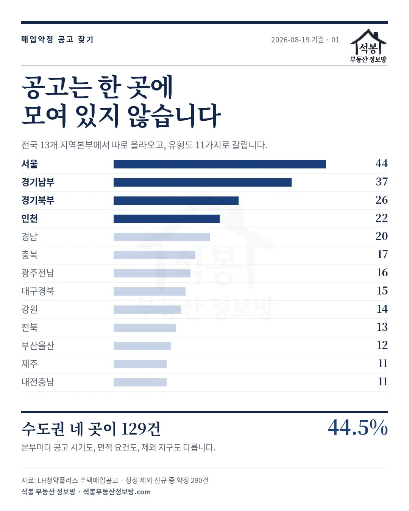
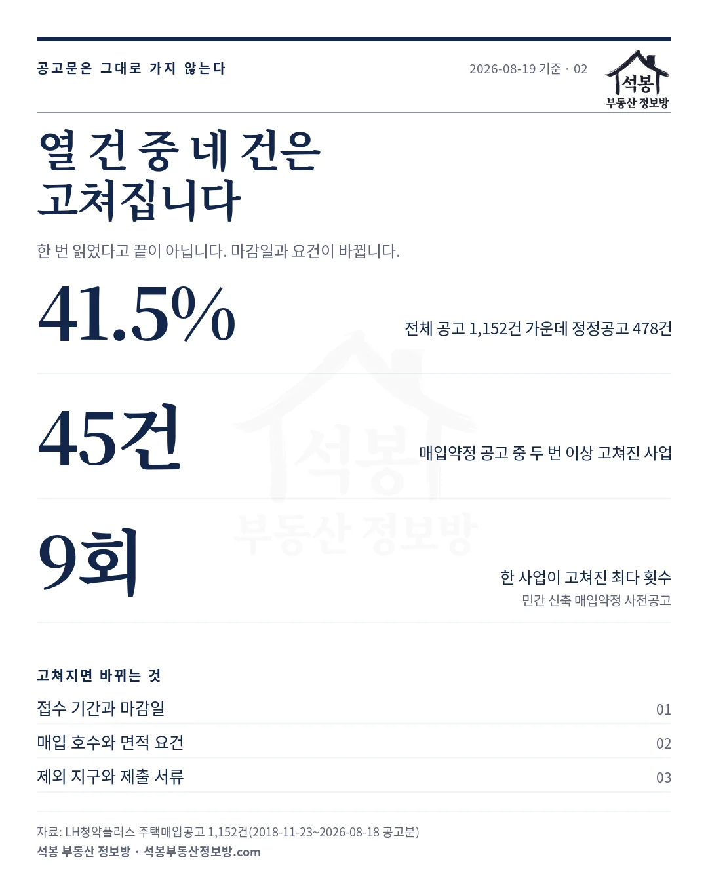
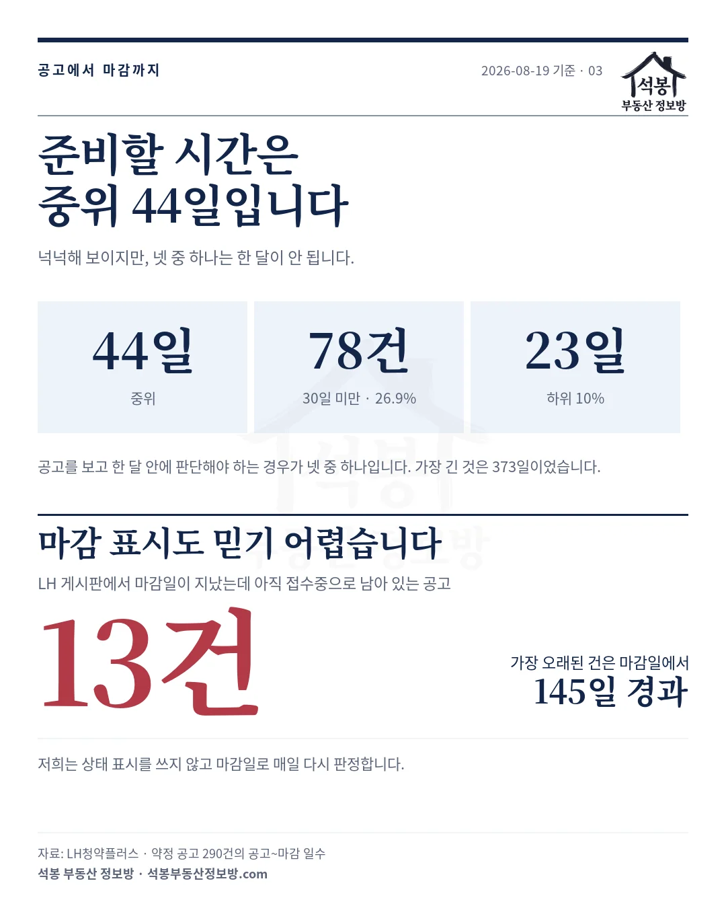
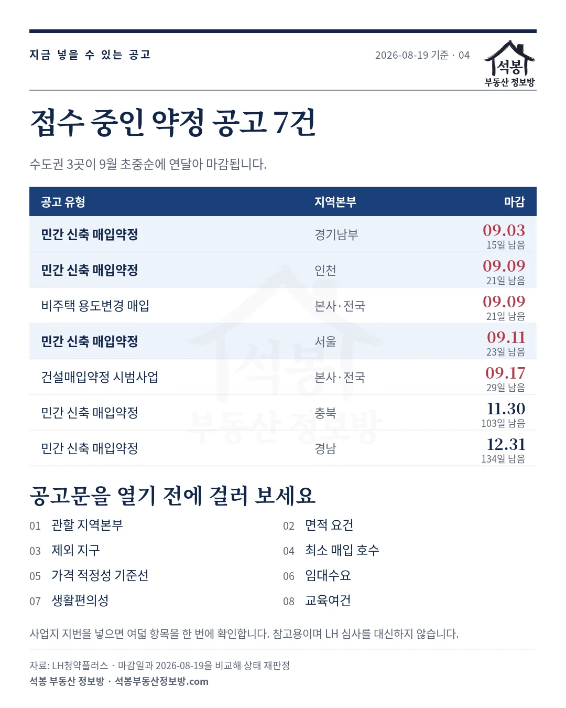

8·13 대책으로 매입약정 조건이 바뀌면서 "그럼 지금 넣을 수 있는 공고가 뭐냐"는 질문을 자주 받습니다. 그런데 이 질문에 답하는 일 자체가 만만치 않습니다. 저희가 2018년부터 모아 온 LH 주택매입공고 1,152건을 들여다보니, 공고를 찾는 과정에 걸림돌이 네 가지 있었습니다.
하나. 공고가 열세 곳에 나눠서 올라옵니다
매입공고는 LH 본사가 한꺼번에 내는 것이 아니라 지역본부별로 따로 올라옵니다. 저희 아카이브에 잡힌 지역본부는 13곳이고, 공고 유형도 11가지로 갈립니다. 민간 신축 매입약정, 기존주택 매입, 준공후 미분양 매입, 비주택 용도변경, 건설매입약정 시범사업이 서로 다른 이름으로 각각 뜹니다.
정정공고를 뺀 신규 공고 674건 가운데 사업자가 짓거나 고쳐서 넘기는 약정 방식은 290건입니다. 이걸 지역본부로 갈라 보면 이렇습니다.
| 지역본부 | 약정 공고 | 지역본부 | 약정 공고 |
|---|---|---|---|
| 서울 | 44건 | 강원 | 14건 |
| 경기남부 | 37건 | 전북 | 13건 |
| 경기북부 | 26건 | 부산울산 | 12건 |
| 인천 | 22건 | 제주 | 11건 |
| 경남 | 20건 | 대전충남 | 11건 |
| 충북 | 17건 | 광주전남 | 16건 |
| 대구경북 | 15건 |
수도권 네 개 본부가 129건으로 약정 공고의 44.5%를 차지합니다. 사업지가 어느 본부 관할인지에 따라 공고가 뜨는 시기도, 면적 요건도, 제외되는 지구도 달라집니다. 내 땅이 어느 본부 소관인지부터 알아야 검색을 시작할 수 있습니다.

가입하시면 지역 시장조사 보고서(약식)를 2회 무료로 요청하실 수 있습니다.
둘. 열 건 중 네 건은 한 번 이상 고쳐집니다
공고를 찾았다고 끝이 아닙니다. 저희가 모은 1,152건 가운데 478건(41.5%)이 정정공고입니다. 매입약정 유형만 따로 세도 248건이 정정본입니다.
같은 사업이 여러 번 고쳐지기도 합니다. 제목에서 정정 표기를 떼고 묶어 보면 두 번 이상 고쳐진 매입약정 사업이 45건이고, 가장 많이 고쳐진 것은 「민간 신축 매입약정 방식 매입 사전 공고」로 아홉 번 정정됐습니다.
무엇이 바뀌느냐가 문제입니다. 접수 기간과 마감일, 매입 호수와 면적 요건, 제외 지구와 제출 서류가 정정 대상입니다. 원본만 보고 준비하다 마감일이 당겨진 것을 뒤늦게 아는 일이 여기서 생깁니다.

셋. 준비할 시간이 넉넉하지 않습니다
약정 공고 290건의 공고일과 마감일 사이를 재 보면 중위 44일입니다. 한 달 반이면 넉넉해 보이지만 분포를 보면 이야기가 다릅니다.
| 구간 | 일수 · 건수 |
|---|---|
| 중위 | 44일 |
| 가장 짧은 축(하위 10%) | 23일 |
| 30일이 안 되는 공고 | 78건 (26.9%) |
| 가장 긴 공고 | 373일 |
넷 중 하나는 한 달이 안 됩니다. 토지를 확보하고 설계를 맞추고 사업계획서를 쓰는 일정을 생각하면 짧습니다. 공고가 뜨고 나서 움직이면 늦는 경우가 있다는 뜻이고, 그래서 어느 본부에서 언제쯤 공고가 나오는지를 미리 아는 것이 실무에서 의미가 있습니다.
넷. 마감이 지났는데 '접수중'으로 남아 있습니다
이건 저희도 데이터를 정리하다 발견한 것입니다. LH 게시판의 상태 표시가 마감일이 지난 뒤에도 그대로 남아 있는 경우가 있습니다. 2026년 8월 19일 기준으로 마감일이 지났는데 '접수중' 또는 '정정공고중'으로 표시된 공고가 13건이었습니다. 가장 오래된 것은 마감일에서 145일이 지났습니다.
반대 방향의 착오도 생깁니다. 목록에서 '접수중'을 걸러 봤는데 실제로는 끝난 공고라 헛걸음하거나, 상태 표시를 믿고 넘겼다가 아직 열려 있는 공고를 놓치는 식입니다. 저희 사이트에서는 상태 표시를 쓰지 않고 마감일과 날짜를 비교해 매일 다시 판정합니다.

그래서 2026년 8월 19일 기준으로 넣을 수 있는 공고는 7건입니다
마감일로 다시 판정한 결과입니다. 약정 방식만 추렸습니다.
| 공고 유형 | 지역본부 | 마감 | 남은 기간 |
|---|---|---|---|
| 민간 신축 매입약정 | 경기남부 | 2026-09-03 | 15일 |
| 민간 신축 매입약정 | 인천 | 2026-09-09 | 21일 |
| 비주택 용도변경 매입 | 본사·전국 | 2026-09-09 | 21일 |
| 민간 신축 매입약정 | 서울 | 2026-09-11 | 23일 |
| 건설매입약정 시범사업 | 본사·전국 | 2026-09-17 | 29일 |
| 민간 신축 매입약정 | 충북 | 2026-11-30 | 103일 |
| 민간 신축 매입약정 | 경남 | 2026-12-31 | 134일 |
일곱 건 가운데 다섯 건이 30일 안에 마감되고, 수도권 세 곳이 9월 3일·9일·11일에 연달아 닫힙니다. 8·13 대책의 원가법 세부 기준이 2026년 9월에 발표될 예정인데, 그 내용을 다 보고 판단하려면 이 세 건은 지나갑니다.

공고문을 열기 전에 여덟 가지를 먼저 봅니다
공고를 찾았다 해도 다음 질문이 남습니다. "내 땅이 이 공고 기준에 맞나." 공고문을 끝까지 읽어야 알 수 있는데, 그 앞에서 걸러낼 수 있는 항목이 있습니다. 저희가 만든 셀프진단은 사업지 주소를 지번까지 받아 여덟 가지를 확인합니다.
| 항목 | 무엇을 보나 |
|---|---|
| 관할 지역본부 | 그 주소를 어느 본부가 맡는지, 매입 대상 지역인지 |
| 면적 요건 | 해당 본부 최신 공고문의 전용면적 기준 |
| 제외 지구 | 공고에서 빠지는 지역에 걸리는지 |
| 최소 매입 호수 | 계획 호수가 기준을 넘는지 |
| 가격 적정성 기준선 | 반경 1.2km 실거래로 잡은 전용 평당 단가대 |
| 임대수요 | 같은 반경의 전월세 거래로 본 수요 두께 |
| 생활편의성 | 공고문에 적힌 거리 기준의 편의시설 |
| 교육여건 | 3km 안 초·중·고 개수 |
가격과 임대수요를 동 이름이 아니라 반경 1.2km로 잡는 이유가 있습니다. 같은 동이라도 끝과 끝은 시세가 다릅니다. 매입임대가 특히 많은 서울 관악구 신림동, 인천 미추홀구 주안동, 경기 안양시 안양동 같은 곳은 한 동 안에서도 빌라촌과 대로변 가격 차가 큽니다. 지도에서 그 동네 실거래를 직접 보시면 왜 동 단위 평균으로는 답이 안 나오는지 바로 보입니다.
여덟 항목은 공고문에 적힌 기준과 저희가 모은 실거래로 계산한 참고값입니다. LH 심사를 대신하지 않고, 감정평가액이나 승인 여부를 보장하지도 않습니다. 비선호 입지와 재무영향도는 아직 자동 판정이 붙지 않았습니다. 계약 판단은 공고문 원문과 담당 지역본부 문의처를 확인하고 하십시오.
정리하면
매입약정 사업에서 정작 품이 많이 드는 일은 조건을 따지는 것이 아니라 지금 무엇이 열려 있는지 파악하는 것이었습니다. 공고는 13곳에 흩어져 있고, 열 건 중 네 건은 고쳐지며, 넷 중 하나는 한 달이 안 되는 기간에 마감되고, 상태 표시는 13건이 실제와 어긋나 있었습니다.
저희는 2018년 11월 23일부터 2026년 8월 18일까지 올라온 공고 1,152건을 모아 두고 매일 새 공고를 받아 상태를 다시 판정합니다. 연도·유형·지역본부로 걸러 볼 수 있게 주택매입공고 아카이브에 정리해 두었고, 사업지 주소로 여덟 항목을 먼저 확인하는 매입약정 셀프진단도 함께 열어 두었습니다. 새 공고가 뜨면 다음 날 아침에 반영됩니다.
원자료: LH청약플러스 주택매입공고 1,152건(2018-11-23~2026-08-18 공고분, 정정공고 478건 포함) · 기준일 2026-08-19
약정 방식 290건은 정정공고를 뺀 신규 674건 중 약정 유형만 추린 것 · 공고~마감 일수와 지역본부 분포도 이 290건 기준
'접수 중' 판정은 LH 상태 표시가 아니라 마감일과 기준일을 비교해 다시 계산한 값이며, 같은 사업의 정정본은 하나로 묶었습니다
셀프진단 8항목은 공고문 기준과 실거래로 계산한 참고값이며 LH 심사·감정평가액을 보장하지 않습니다 · 편집·제작: 석봉 부동산 정보방 · 투자 권유가 아닙니다.